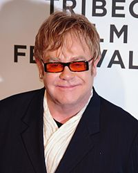

Elton Hercules John
mas conocido como Elton John, es un cantante, compositor y pianista británico de rock, glam rock y piano rock. Es uno de los músicos con mayores ventas de todos los tiempos, que superan los 300 millones de álbumes en todo el mundo. Sus múltiples reconocimientos incluyen el título de «Sir» después de ser nombrado comendador de la Orden del Imperio Británico por la reina Isabel II. De acuerdo con la revista Billboard, es el tercer artista más grande de todos los tiempos en los Estados Unidos.
